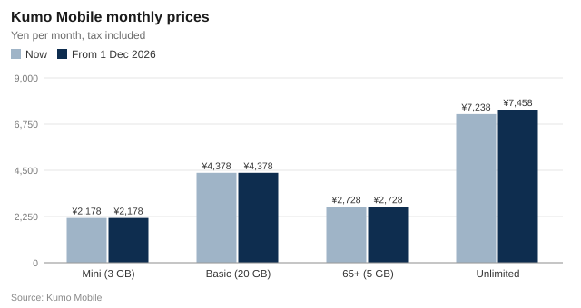

Kumo Mobile to raise Unlimited plan by ¥220 from December
Kumo Unlimited will cost ¥7,458 a month from 1 December, and the Asia day pass for travellers abroad rises to ¥1,080. The other three plans and all discounts stay the same, and consumer advisers say users of less than about 25 GB a month may save by switching.
Kumo Mobile, the national carrier with its largest Harvest Prefecture shop in the Springvale Central Station building, said on Friday that it would raise the price of its Kumo Unlimited plan by ¥220 a month from 1 December. The company said it needed the extra revenue to keep investing in its 5G network as costs rise.
Kumo Unlimited will go from ¥7,238 to ¥7,458 a month, tax included, a rise of 3.0%. The change applies to every Kumo Unlimited customer, including existing contracts, from December usage, which is the bill paid in January 2027. In a month when a customer uses 3 GB or less, the plan's low-use discount of ¥1,650 still applies, so the price for such a month rises from ¥5,588 to ¥5,808.
The Kumo World day pass for Asia, which gives 24 hours of data abroad, rises from ¥980 to ¥1,080. Asia passes bought at the old price by 30 November can still be used until 31 January 2027.
| Plan or option | Data | Now | From 1 December | Change |
|---|---|---|---|---|
| Kumo Unlimited | Unlimited | ¥7,238 | ¥7,458 | +¥220 |
| Kumo Unlimited in a month of 3 GB or less | — | ¥5,588 | ¥5,808 | +¥220 |
| Kumo World day pass: Asia | 24 hours | ¥980 | ¥1,080 | +¥100 |
| Kumo Mini | 3 GB | ¥2,178 | ¥2,178 | No change |
| Kumo Basic | 20 GB | ¥4,378 | ¥4,378 | No change |
| Kumo 65+ | 5 GB | ¥2,728 | ¥2,728 | No change |
New prices apply from December 2026 usage (the bill paid in January 2027), including existing contracts. All discounts are unchanged: the family discount per line is ¥550 (2 lines), ¥1,100 (3 lines) or ¥1,210 (4–10 lines) on Basic and Unlimited, ¥550 on 65+, none on Mini. Plan changes are free; a change made by 30 November applies from 1 December. Source: Kumo Mobile notice of 2 October 2026.
What stays the same
Nothing else changes. Kumo Mini (3 GB, ¥2,178 a month), Kumo Basic (20 GB, ¥4,378) and Kumo 65+ (5 GB, ¥2,728) keep their prices, as do day passes for other parts of the world, call options and Device Care. All discounts stay as they are.
That includes the family discount, which is worth more the more lines a family has. On Kumo Basic and Kumo Unlimited, each line gets ¥550 off a month in a group of two lines, ¥1,100 off with three lines and ¥1,210 off with four to ten. Kumo 65+ lines get ¥550 off however large the group, and Kumo Mini lines get no family discount.

What it means for households
For a single customer on Kumo Unlimited, the rise comes to ¥2,640 a year. A couple with two Unlimited lines will pay ¥13,816 a month after the family discount, up from ¥13,376. A family of three on Unlimited, each line with ¥1,100 off, will pay (¥7,458 − ¥1,100) × 3 = ¥19,074 a month, ¥660 more than now.
We have kept every other price and every discount as it is. The change is limited to the plan that uses the most of the network.
Asami Fujita, Kumo Mobile spokesperson
Kumo Mobile said it would tell affected customers by SMS and email during October.
Check before you pay more
Consumer advisers say the rise is a good moment for Unlimited users to look at how much data they really use. Kumo Basic includes 20 GB for ¥4,378, and extra data costs ¥550 per GB. A customer who uses 25 GB a month would pay ¥7,128 on Basic with five extra gigabytes, still less than the new Unlimited price; above about 25 GB, Unlimited is cheaper.
The difference can be large. A customer who uses 18 GB a month and stays on Unlimited will pay ¥7,458 from December; on Kumo Basic the same customer would pay ¥4,378, or ¥3,080 less every month.
Many people chose unlimited data years ago and never looked again. Your usage for the last three months is in the My Kumo app. If it is well under 25 GB, ask about Basic before December.
Yoko Ishikawa, counsellor at the Harvest Prefecture Consumer Centre
Ms Ishikawa also warned that scam text messages pretending to come from mobile carriers tend to increase when prices change; Kumo Mobile itself warned customers about fake Kumo text messages last month. She advised customers not to follow links in messages about the price change and to check in the official app instead.
Plan changes are free and there is no cancellation fee. A change made by 30 November takes effect on 1 December, so customers who switch in time will never pay the new Unlimited price.
At the Springvale Central shop
Kumo Shop Springvale Central, on the second floor of the station building, is open every day from 10:00 to 20:00, with the last reception for new contracts and switching at 18:30. During the Lantern Festival on 10 and 11 October it stays open until 21:00. The shop recommends booking an appointment, as afternoon waits are long; plan changes can also be made in the My Kumo app.
The rise follows the higher water charges approved by the city council on Wednesday, part of a run of price increases that has made the cost of living an issue in next month's mayoral election.
Comments 4
unlimited_since_2023
Checked My Kumo after reading this: I use 11 GB a month. Switching to Basic tonight. Thanks for the maths.
TakeshiM
Tried to book at the Springvale Central shop and the first free slot is after the festival. Doing it in the app instead.
grandma_yuzu
I don't know how much data I use. My grandson set up the phone. I will ask him to check as the article says.
traveller_Kitamachi
The Asia day pass going up ¥100 hurts me more than the plan. Buying a few before 30 November.